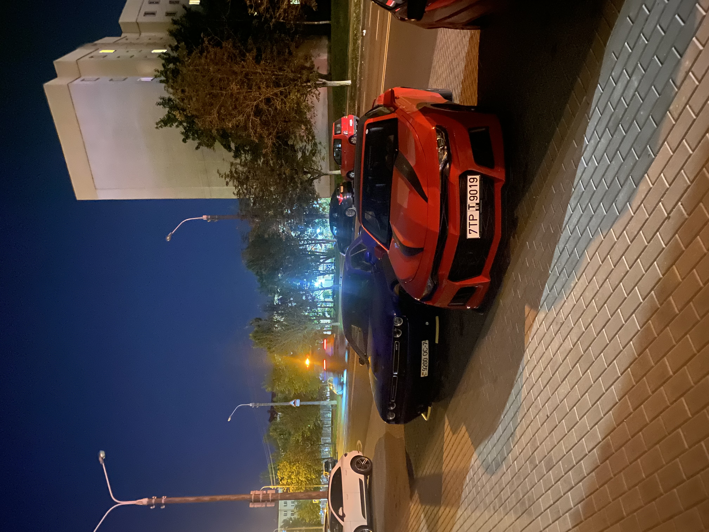
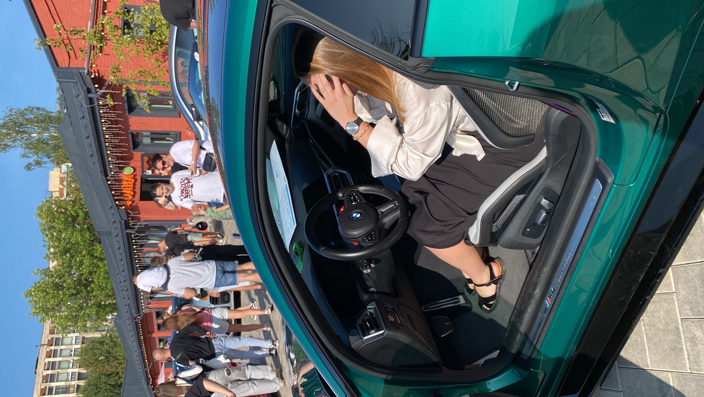

<!--Адаптивный сайт, расположение на разных устройствах-->
<!-- Изменить фон может найти какуюто картинку-->
<html>
<head>
    <title>Hobbies</title>
<meta http-equiv="content-type" content="text\html" charset="UTF-8">
<link rel="stylesheet" href="hobbies.css" type="text/css">
</head>
</html>

<body>
<!--шапка сайта-->
    <header align="right">
        <nav>
        <ul>
        <li  class="li-1"><a class="a-header" href="#info">О себе</a></li>
        <li  class="li-1"><a class="a-header" href="#hobbies">Хобби</a></li>
        <li  class="li-1"><a class="a-header" href="#fotoes">Мои  фотографии</a></li>
        </ul>
        </nav>
    </header>

<h1 class="text-center">Хобби &#129392</h1>

<div class="Info">
<h2><div id="info">О себе</div></h2>
Всем привет! Давайте знакомиться. Меня зовут Полина, мне 19 лет. На самом деле не умею я грамотно писать информацию о себе, но очень постараюсь.
<br>Немного меня в ленту
<figure class="pic">


</figure>
<p>
Если описывать меня прилагательными, это будет примерно так: общительная, добрая, дружелюбная, красивая, умная и рассудительная. Люблю поддерживать людей, который реально в этом нуждаются, а не изображают из себя жертв. очень чувствительная и эмпатичная.
Учусь в АУпПРБ на 3 курсе, специальность УИР. Жалею, что поступила, только из-за того, что в 11 классе выбрала будущую профессию на "обум".  В общем, сейчас настал тот период, когда я начинаю искать себя заново. Давайте знакомиться с моими хобби.
</p>
</div>


<div class="Hobby">
<h2><div id="hobbies">Мои хобби</div></h2>
<!--написать текст подводку-->
<ol>
<li><a href="#sport">Спорт</a></li>
<li><a href="#cars">Машины</a></li>
<li><a href="#reading">Чтение</a></li>
<li><a href="#podcast">Подкасты</a></li>
<li><a href="#another">И еще немного больше</a></li>
</ol>
Кликайте по ссылке и переходите!
</div>


<h3 class="text-center"><div id="sport"><font size="5">Спорт</font></div></h3>
<p>
    Наш список открывает хобби "Спорт" &#127947;&#65039;&#8205;&#9794;&#65039;
    <br>В это слово я закладываю следующий смысл: собственные тренировки + обучение на фитнес-тренера + тренировки для других людей.
    <br>Так как я не определилась со своей будущей профессией, фитнес-тренер одна из альтернатив. На сегодняшний день я активно тренируюсь по собственно составленной программе, включающей тренировки на различные типы мышц по сплит-системе и контроль питания. Если рассматривать это хобби на будущую перспективу, я бы очень хотела пройти именно обучающие курсы фитнес-тренера с сертификатом установленного образца в РБ. Так я смогу легализовать свою деятельность и тренировать других людей.
<br>Я бы хотела быть не просто тренером, но и блоггером с активной аудиторией. Думаю, неплохо было бы работать онлайн и оффлайн, и делать людей по всему миру здоровее и счастливее.
<br><b>Какие ценности я хочу закладывать в свою деятельность?</b>
<ol>
    <li>Тренировки через "хочу", а не через "заставить"</li>
    <li>Работа со всем телом в единой системе</li>
    <li>Полезное и вкусное питание без ограничений</li>
</ol>
Сейчас я стараюсь обучаться по бесплатным материалам от любимых фитнес-тренеров, иногда приобретаю мини-курсы за money. В общем посмотрим, куда мен это приведет.
<br>Занимаюсь я в домашнем тренажерном зале, но иногда езжу в спортивный комплекс.
<figure class="pic">  
    
    
    
    <figcaption>Спорт-это жизнь!</figcaption>
         </figure>
Вообще  считаю, что именно <b>спорт</b> помогает людям развивать дисциплину в любой из сфер жизни!
<br>Если хотите узнать немного больше о теме спорт, совету/ эти каналы в Телеграмме:
<ol>
    <li><a href="https://t.me/lerashme">LerAsh Тренирует</a></li>
    <li><a href="https://t.me/anatomyclub">Анатомия Клуб</a></li>
    <li><a href="https://t.me/krasnobaev_ilya">Фитнес мозгами Краснобаева</a></li>
</ol>
</p>


<h3 class="text-center"><div id="cars"><font size="5">Машины</font></div></h3>
<p>
    Это хобби появилось относительно недавно, но активно начало развиваться, и сейчас я не представляю своей жизни без просмотра роликов про машины. меня интересует буквально всё: от двигатель до тормозных дисков, от выхлопа до перепрошивки коробки. Как начало развиваться это хобби я сама и не заметила, вот само как-то появилось.
    <br>Изучаю я эту нишу с помощью интернет ресурсов Google, YouTube и тд. 
    <br>Вот мои любимые каналы на Ютуб:
    <ol>
      
        <li><a href="http://www.youtube.com/@carwowRussia">CarWOW на русском</a></li>
        <li><a href="http://www.youtube.com/@BulkinDrive">Bulkin Drive</a></li>
        <li><a href="http://www.youtube.com/@ildarauto">Ильдар авто-подбор</a></li>
    </ol>
    Любимая марка машин <b>BMW</b>. В будущем хотелось бы иметь M340i на первом Stage.
   <br> <br> <center> <details>
        <summary>
            Что такое stage у машин?
        </summary>
        <p>
            Stage представляет собой набор улучшений, установленных в виде набора. Как и следовало ожидать, этап – это то, насколько далеко вы продвинулись в настройке вашего автомобиля. Этап 2 представляет собой более настроенный автомобиль, чем этап 1. Что может немного запутать, так это то, что значение каждого «этапа» может варьироваться от автомобиля к автомобилю и даже от тюнера к тюнеру.
<br>Этап 1, как правило, представляет собой серию модификаций, которые можно самостоятельно установить на стандартный автомобиль. Это будет включать изменения, которые не требуют какого-либо дополнительного оборудования, обновления впуска и выпуска, которые оставляют оригинальные каталитические нейтрализаторы на месте. Вы можете сделать все эти модификации самостоятельно, и это даст неплохой прирост мощности.
<br><br>Настройка этапа 2 – это следующий уровень, и мы переходим к модам, для работы которых требуются другие детали. Они, как правило, также более агрессивны и делают повседневное вождение немного более трудным или шумным, и их можно встретить на большинстве автомобилей для трек-дней. Примеры модов этапа 2 включают гибридное турбо или турбо-обновление, потому что для его наилучшей работы требуется другой коллектор или переключающий клапан или переназначение. Переназначение этапа 2 может потребовать модернизации турбонагнетателя или повышенного номинала сцепления или переключающего клапана для правильной работы. Надежность автомобиля не должна снижаться, но вы в значительной степени потеряете любую возможность или допустимую погрешность в стандартной настройке производителя, и вам придется тщательно обслуживать автомобиль и поддерживать его.
<br><br>Настройка этапа 3 является наиболее агрессивным этапом, как правило, для серьезного автоспорта или соревнований. Моды, используемые на этапе 3, часто технически запрещены для использования на дорогах. Тюнинговые моды Этапа 3, как правило, не подходят для использования на дорогах. К проблемам относятся неустойчивый холостой ход, высокий диапазон мощности, неудачные тесты на выбросы выхлопных газов и слишком неровная дорога, чтобы ездить в условиях медленного движения. Однако на трассе, где постоянно используются высокие обороты, и тормоза, как правило, остаются теплыми во время использования, а выбросы не принимаются во внимание, тогда этап 3 практически является обязательным.
        </p>
    </details> </center>
    И как у истинного фаната машин не может быть своей галереи? &#128580;
    <div class="containerfoto"><center>
        
        
       
   </center> </div>
    <div class="containerfoto"><center>
        
        
       
   </center> </div>
   <div class="containerfoto"><center>
        
        
    </center></div>
    <div class="containerfoto"><center>
        
        </center></div>
</p>


<h3 class="text-center"><div id="reading"><font size="5">Чтение</font></h3></div>
<p>
    Читаю я приемущественно художественную литературу. Не могу сказать, что это прям хобби, но иногда прям очень хочется. Особенно перед сном чтение хорошо расслабляет и помогает лучше уснуть.
<br>Любимая серия книг "Ведьмак". Скоро её дочитаю. почему любимая? Экшен сражения, любовь, откровенные сцены, красивые пейзажи, монстры, ведьмы, эльфы, злодеи и всё-всё такое интересненькое. Эти книги помогают мне абстрагироваться от реалиьности, переместиться в мир Геральта из Ривии и изучать устройство этого мира изнутри.
<br><b>В каком порядке читать книги?</b>
<ol>
    <li>«Последнее желание» (1986 г.)
        <br>Это сборник рассказов, повествующих о жизни, странствиях и приключениях последнего ведьмака на Земле – Геральта из Ривии. Произведения знакомят читателя с вселенной, в которой после сопряжения Сфер соседствуют люди, существа других рас (эльфы, сильваны) и чудовища. В каждом из рассказов обыгрываются известные сюжеты народных сказок и легенд. К примеру, произведение «Ведьмак» построено на польском сказании «Королевна-упырь», в «Крупице истины» угадываются события из «Красавицы и чудовища», «Меньшее зло» содержит отсылки к «Белоснежке» и так далее. Постепенно из этой мозаики вырисовывается не только характер главного героя, но и завязка к событиям последующих книг.</li>
    <li>
        «Меч предназначения» (1992 г.)
<br>Вторая книга серии также представляет собой сборник рассказов, объединенных главным персонажем ? Геральтом из Ривии. В этой части ведьмак, вопреки обстоятельствам, находит обещанного ребенка по праву неожиданности (Цири) и принимает свое Предназначение. Параллельно с этим разворачиваются истории его друзей и возлюбленной Йеннифэр. Произведения наполнены магией, придворными интригами, приключениями, встречами с загадочными существами (драконом, допплером) и захватывающими боевыми сценами. Общий фон повествования – предстоящая война с империей Нильфгаард.</li>
    <li>«Кровь эльфов» (1994 г.)
        <br>Королевство Цинтра захвачено Нильфгаардом, но юной наследнице Цири чудом удается спастись. Она встречает Геральта, который увозит девочку в Каэр Морхен – крепость ведьмаков. Цири начинают обучать мастерству боя, однако вскоре у нее открываются магические способности. Для того чтобы понять природу этой силы, Геральд обращается к Йеннифэр, которая увозит девочку в храм в Элландере.</li>
    <li>«Час презрения» (1995 г.)
       <br> Короли и придворные чародеи больше не доверяют друг другу, грядет внутренний раскол и новая война. Йеннифэр хочет устроить Цири в магическую школу в Аретузе, перед этим показав девочку на Чародейском Сборе. За ними следует Геральт, распуская слухи о гибели княжны из Цинтры. На Сборе происходит мятеж, раненый ведьмак оказывается в священном лесу дриад – Брокилоне. Цири, используя неисправный портал, переносится в пустыню, где спасается от смерти благодаря единорогу. Выбравшись из пустынных земель, цинтрийская княжна примыкает к банде разбойников под именем Фалька.
    </li>
    <li>«Крещение огнем» (1996 г.)
        <br>Геральт в компании Лютика отправляется на поиски Цири. К ним примыкает высший вампир Мальва, похожая на цинтрийскую княжну как две капли воды. Нильфгаард продолжает наступление на северные территории. Йеннифэр сбегает из плена и тоже отправляется на поиски Цири. Княжну разыскивают посланники нильфгаардского императора и безжалостные наемники.</li>
<li>«Башня ласточки» (1997 г.)
    <br>Цири вступает в неравный бой, после которого на ее лице остается страшная рана. Йеннифэр в поисках княжны сама попадает в беду. Геральт все еще не нашел свою воспитанницу и продолжает поиски. Цири, спасаясь от преследования, устремляется к волшебной Башне Ласточки.</li>
<li>«Владычица озера» (1998 г.)
    <br>Поиски Цири оказываются успешными, она находит Башню Ласточки и через портал отправляется в параллельный мир. Но и здесь ее ждет опасность, избежать которую помогают единороги. Во время побега княжна теряется в параллельных мирах, на этот раз к ней на помощь приходят волшебницы из будущего.
    Королевства Севера объединяются и дают отпор Нильфгаарду. Цири отправляется к Йеннифэр и попадает в руки к магу Вильгефорцу. Об этом узнает Геральт и вместе с друзьями устремляется на помощь. В заключительной части сбываются древние пророчества, но Цири удается изменить судьбы своих друзей и наставников.</li>
<li>«Сезон гроз» (2013 г.)
   <br> Заключительная книга серии вышла спустя 28 лет после выпуска первого рассказа из серии «Ведьмак». Она не продолжает сюжетную линию последнего тома саги, а дополняет рассказы из сборника «Последнее желание». Геральт продолжает зарабатывать на жизнь уничтожением монстров, попавших на Землю после сопряжения Сфер, сталкиваясь с презрением людей и смертельной опасностью. В то же время ведьмак находит новых друзей и врагов, против своей воли оказывается втянутым в политические интриги и тем самым влияет на ход истории своего мира.</li>
</ol>
<br><center>Ведьмак стал настолько популярным, что по нему сделали экшен-игру. Могу порекомендовать несколько видео для просмотра:</center>
<br><center><iframe width="560" height="315" src="https://www.youtube.com/embed/GMnqoVjMDQg?si=dwqFDal35uz0EF_g" title="YouTube video player" frameborder="0" allow="accelerometer; autoplay; clipboard-write; encrypted-media; gyroscope; picture-in-picture; web-share" referrerpolicy="strict-origin-when-cross-origin" allowfullscreen></iframe>
<iframe width="560" height="315" src="https://www.youtube.com/embed/6Nval_I6q1s?si=BC46VSznWC9vS3bt" title="YouTube video player" frameborder="0" allow="accelerometer; autoplay; clipboard-write; encrypted-media; gyroscope; picture-in-picture; web-share" referrerpolicy="strict-origin-when-cross-origin" allowfullscreen></iframe> </center>
</p>


<h3 class="text-center"><div id="podcast"><font size="5">Подкасты</font></h3></div>
<p>
Еще одно моё хобби-просмотр подкастов. ДА, именно просмотр. Я люблю смотреть на мимику людей, люблю анализировать их поведение при просмотре роликов. Приемущественно смотрю всё на Ютубе в свободное время. Тематика роликов может быть абсолютно разная. Люблю смотреть что-то про историю в целом, просто знаменитостей, про маньяков и так далее. Также обожаю смотреть трэвл-ролики, когда завтракаю. ТЫ словно окунаешься в культуру других народов, смотришь достопримечательности вместе с любимыми ютуберами и выбераешь следующую страну для посещения.
<br> Смотрю это для общего развития и расширения кругозора. Люблю быть образованной и интересной. Плюс просмотр таких подкастов дает вам буст в виде того, что с вами никогда не будет скуыно при разговоре.
<br><center><iframe width="560" height="315" src="https://www.youtube.com/embed/mWoBgQwAfLk?si=gFQpbEcqQcea8IPg" title="YouTube video player" frameborder="0" allow="accelerometer; autoplay; clipboard-write; encrypted-media; gyroscope; picture-in-picture; web-share" referrerpolicy="strict-origin-when-cross-origin" allowfullscreen></iframe>
<iframe width="560" height="315" src="https://www.youtube.com/embed/2vcYaTVs_EM?si=LyDeMaJEpNugI3-3" title="YouTube video player" frameborder="0" allow="accelerometer; autoplay; clipboard-write; encrypted-media; gyroscope; picture-in-picture; web-share" referrerpolicy="strict-origin-when-cross-origin" allowfullscreen></iframe>
<br><iframe width="560" height="315" src="https://www.youtube.com/embed/gIBqNZG0mf4?si=LLn6eQNl5yn8U49k" title="YouTube video player" frameborder="0" allow="accelerometer; autoplay; clipboard-write; encrypted-media; gyroscope; picture-in-picture; web-share" referrerpolicy="strict-origin-when-cross-origin" allowfullscreen></iframe>
<iframe width="560" height="315" src="https://www.youtube.com/embed/vjB0JnEHEcI?si=-mhQl9ahSq-ODDkW" title="YouTube video player" frameborder="0" allow="accelerometer; autoplay; clipboard-write; encrypted-media; gyroscope; picture-in-picture; web-share" referrerpolicy="strict-origin-when-cross-origin" allowfullscreen></iframe>
</center>
</p>


<div class="Another Info">
<h3 class="text-center"><div id="another"><font size="5">И еще немного больше</font></h3>
    <p>
        Было довольно сложно выделить опредленные хобби, так как я человек разносторонний и стараюсь увлекаться большим количеством активностей.
        <br>И если я это не внесла в список хобби, это не значит, что я этим не увлекаюсь. Я до сих пор продолжаю искать себя и своё место в этом мире, поэтому стараюсь расширять кругозор.
    <h4>Инвестирование в облигации и криптовалюту</h4>
    <p>Ничего сверхъестественного. Хочу попробовать эту нишу и уже делаю свои первые шаги. Инвестирую с белорусской организацией Айгенис.
        <ol>
            Их Ютуб и Тг-канал:
            <li><a href=http://www.youtube.com/@aigenis_invest>Айгенис Инвест</a></li>
            <li><a href=https://t.me/invest_aigenis></a>Чат Айгенис Инвест</li>
        </ol>
        Инвестирую в облигации, по которым выплачивают купоны раз в квартал. Вот такой пассивный доход. Криптовалюту только начинаю изучать.
    </p>

    <h4>Программирование</h4>
    <p>
        Моё прямое обязательство в связи с поступлением на Айти специальность. Но мы не жалуемся, а продалжаем учиться. Программирование на С++ мне не понравилось, а вот кодить сайтики мне доставляет больше удовольствия.
   <figure class="pic">
    
    <figcaption>
        Это примерно я
    </figcaption>
   </figure>
    </p>
    <h4>Экономика</h4>
    <p>
        Тоже мое прямое обязательство, но тут уже играет больше мой личный интерес. За некоторое время у меня сформировалось мнение, что для лучшего понимания функционирования мира всё-таки экономику знать необходимо.
        <br><center> </center>
    </p>
    </p>
</div>

<h2 class="text-center"><div id="fotoes"></div>Мои фотографии</h2>
    
    
    
    
   
    
    
    
    

</body>
